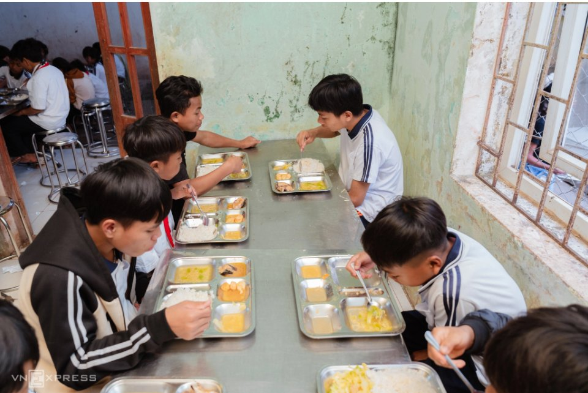
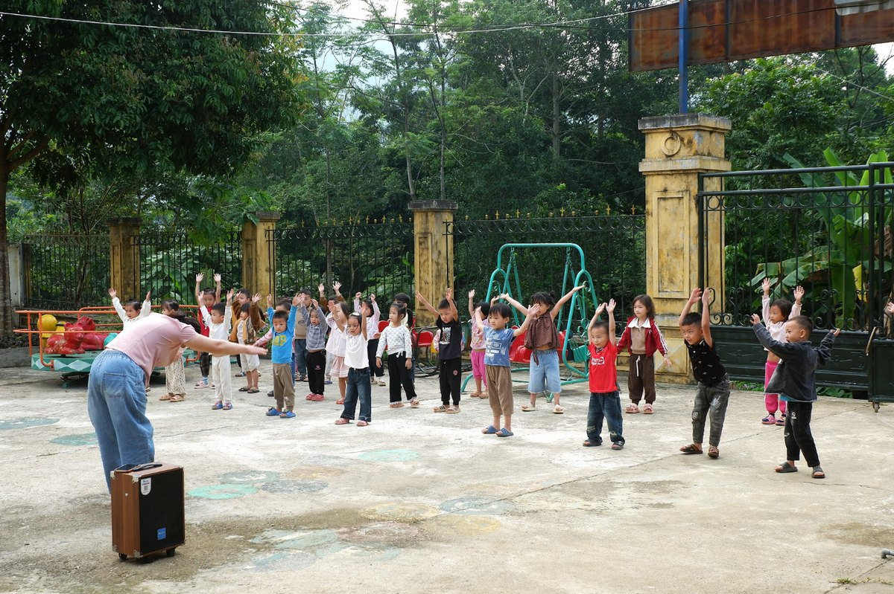

Cặp em có gì, đường em đi, lớp học của em, chuyện từ trang sách
ĐI CÙNG EM ĐẾN LỚP: kéo theo dấu chân
Bài viết liên quan
Tin bài mùa thu
7 bài
Chiếc cặp sách mới và niềm vui ngày khai trường: Món quà nâng bước em đến lớp
Với trẻ em vùng cao chúng em, tiếng trống tựu trường rộn rã vang lên giữa thung lũng mây mờ luôn đánh thức những xao xuyến rất đỗi ngây thơ

Mái trường giữa núi rừng Phong Nha: Nơi chúng em coi là nhà
Ở xã Thượng Trạch, giữa núi rừng Phong Nha - Kẻ Bàng, có những đứa trẻ như tụi em ít được ở bên bố mẹ. Với tụi em, trường không chỉ để học chữ mà còn là ngôi…

Hành trình tìm chữ: những bước chân của trẻ em vùng cao
Đi bộ từ tờ mờ sáng qua những con dốc ngoằn ngoèo để kịp buổi học ở mái trường cũ kỹ, sờn màu thời gian - đó từng là hành trình tìm chữ quen thuộc của lũ trẻ…

Bữa cơm dưới chân núi Cà Đam: Vị muối rừng và ước mơ trong veo của em
Nằm heo hút dưới chân núi Cà Đam (huyện Trà Bồng, Quảng Ngãi), bữa cơm trưa của những đứa trẻ người dân tộc Cor tại các điểm trường cắm bản thôn Quế đôi khi…

Cánh cửa mở ra thế giới từ chiếc thư viện thân thiện nơi lớp học bản Sưng
Nằm khuất sau những dốc đá, góc lớp học của trẻ em vùng cao chúng em trở nên rạng rỡ hẳn lên nhờ chiếc thư viện thân thiện với những gờ gỗ xếp đầy sách mới

Thế giới sau trang sách
Sau lớp sương mù trắng xóa của những ngọn núi cao, khi được hỏi ‘Ước mơ của con là gì?’, câu trả lời của lũ trẻ vùng bản chưa bao giờ chỉ dừng lại ở một bữa…

Để mỗi ngày đến trường của trẻ em thêm an toàn
Với trẻ em vùng cao, trường học không chỉ là nơi gieo những con chữ mà còn là nơi các em vui chơi, sinh hoạt và lớn lên cùng bạn bè…